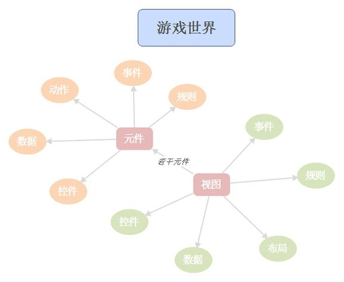
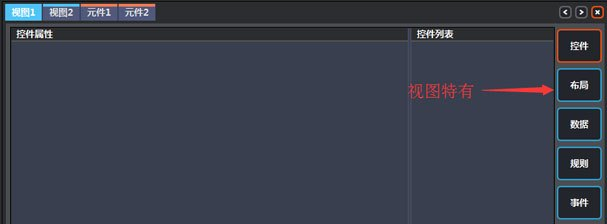
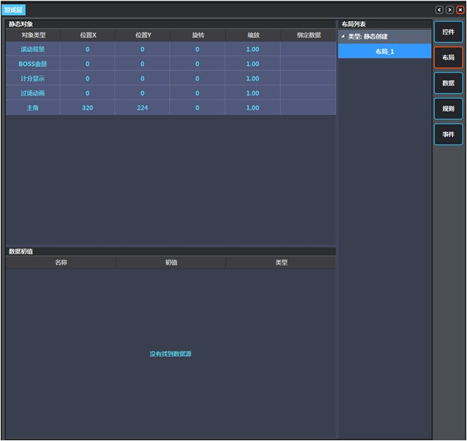
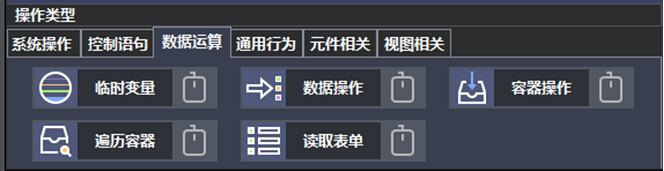
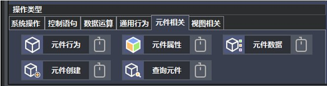
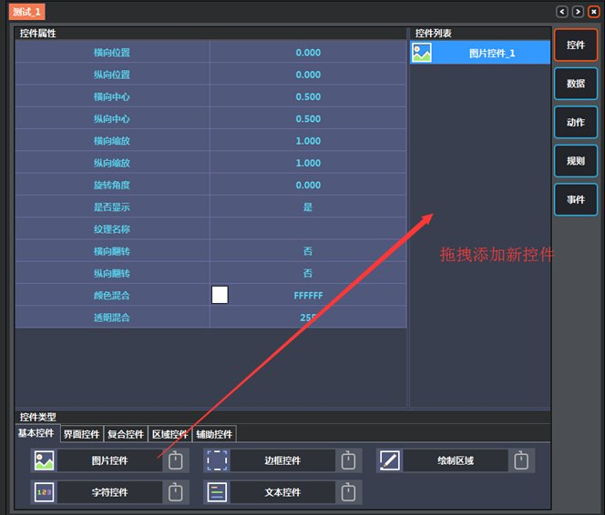
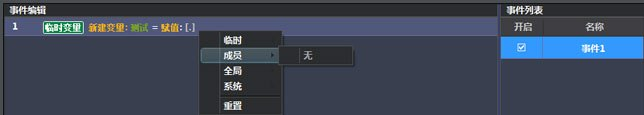
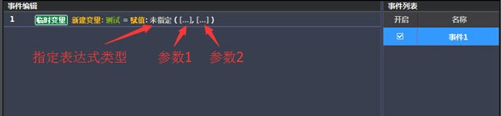
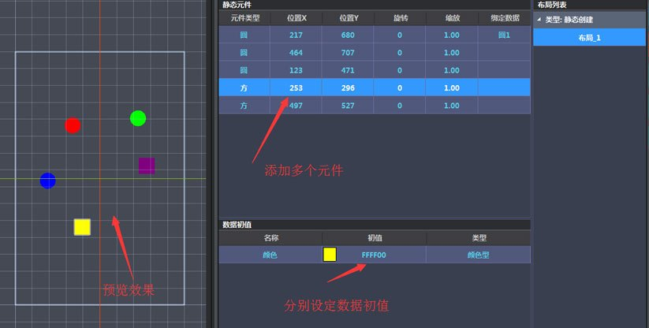
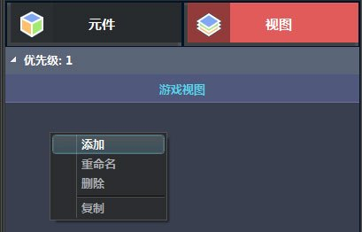

-
下载硬壳引擎
通过 硬壳引擎官网下载免费安装包，并安装
运行硬壳引擎
双击硬壳.exe运行：
开始页面：
-
工程管理
创建新工程
1. 点击"新建项目"
 ：
：2. 选择工程路径，输入工程名称：
3. 点击创建按钮，完成工程的创建：
打开工程
1. 点击"打开项目"
2. 浏览到工程所在的目录：
3. 选中工程后，点击确认打开：
-
编辑器整体概览
整体框架图
硬壳引擎的游戏世界在同一时间可显示一个或多个视图，每个视图上可以放置若干元件。 视图和元件都拥有控件、数据、事件、规则这几个组成部分。
编辑器界面总览
上方为菜单栏
从左到右，功能依次为:
新建项目
打开项目
保存项目
调试模式运行 模拟真机运行
扫码真机测试 用真机扫码下载项目并运行测试
发布游戏项目
访问硬壳官网
右侧为元件、视图列表区:
.jpg)
选择元件或视图后，可在列表区中右键添加元件或视图
新建的元件或视图会自行打开进入编辑状态
后续切换不同元件或视图的编辑状态时，通过双击打开指定元件或视图进行编辑
在中间的操作区中可看到，上方标签高亮的表示正在编辑的元件或视图，可以在上方标签中选择已打开的元件或视图进行切换。
可以看到元件和视图的可编辑选项略有不同
.jpg)
动作为元件特有，而布局为视图特有。
在右侧元件或视图列表中，右键指定元件或视图，可以重命名、删除、复制元件或视图，或是设定元件或视图的优先级。
其中复制元件将复制其内部的控件、数据、动作、规则、事件，复制视图将复制内部的控件、布局、数据、规则、事件。
元件和视图的优先级可设定为 -8 ～ 8 之间除0以外的整数
优先级高的视图，显示的优先级和逻辑执行的优先级高于优先级低的视图，在同一视图内部
优先级高的元件，显示的优先级和逻辑执行的优先级高于优先级低的元件。
元件和视图的控件编辑也略有差别。
视图的控件列表有层级显示
而元件的控件编辑中没有层级显示
.jpg)
因此，在视图的控件编辑时可以指定控件的层级
其中背景层表示该控件始终显示于视图的最底层，即显示优先级最低，假设该视图上有元件，无论元件的优先级设定为多少，都将显示于背景层控件的上方。
而置顶层表示该控件始终显示于视图的最顶层，即显示优先级最高，假设该视图上有元件，无论元件的优先级设定为多少，都将显示于置顶层控件的下方。
元件层比较特殊，其显示优先级低于优先级为正的元件，而高于优先级为负的元件。从显示上，可以认为它的优先级为0。
关于逻辑帧的执行顺序，不同视图之间，按照视图的优先级从高到低，顺序执行，同优先级的，按照创建顺序从早到晚，顺序执行。
在视图内部逻辑帧的执行顺序如下图所示
首先，从优先级为正的元件开始，按照元件的优先级，从高到低顺序执行，元件内部的事件按照在事件列表中的排列顺序，从上往下，顺序执行。
之后执行视图事件逻辑，按照视图事件在事件列表中的排列顺序，从上往下，顺序执行。
最后是优先级为负的元件，依然按照元件的优先级，从高到低顺序执行，元件内部的事件按照在事件列表中的排列顺序，从上往下，顺序执行。
左侧为工具栏
其中
 为编辑系统属性
为编辑系统属性打开后看到默认为系统设置页面，其中，要想调试项目，必须为项目指定起始视图。
游戏数据即为游戏的存档数据
物理材质用于判断物体之间的碰撞，可为每个材质指定材质过滤，即他们各自可以与哪些材质发生碰撞。
外部数据可用于进行游戏的DIY操作
按键映射为可以指定按键模拟鼠标点击，以测试多点触控的情况，需要指定键值及对应坐标X，Y。
工具栏中剩下的均为辅助编辑器，要了解各辅助编辑器的说明，可先查看资源关系说明。之后参见辅助编辑使用说明。
以下为主编辑器内，各模块概览
各模块总览
控件编辑
数据编辑
规则编辑
事件编辑
动作编辑
布局编辑
控件说明
以下是所有控件面板的展示，关于控件的编辑说明请参见控件说明。
数据说明
项目中的数据分为游戏数据、全局数据、成员数据和临时数据。
成员数据是用户为每个元件或视图自身定义的数据，用于进行其自身的事件逻辑及相互之间的交互等。
数据通过在元件或视图对应的数据面板中进行添加，上图中列出了所有类型的数据， 分别是布尔型、数值型、文本型、颜色型、元件型和容器型。具体含义及使用方式可参见数据说明
事件说明
事件是由一系列操作组成的，用于进行元件或视图的逻辑帧处理，事件中的操作很多需要引用元件或视图自身的数据， 事件的初始状态可以设置为开启或关闭。每个元件或视图上可以拥有多个事件， 事件的执行顺序将按照事件在对象中事件标签中的排列顺序进行。 以下是所有事件操作面板的展示，关于事件的详细介绍及编辑方式请参见事件说明。


规则说明
规则是带参数的脚本调用机制，通过规则编辑器可以创建新的规则， 每个规则可以定义自身可携带的参数，且需要指定关联的脚本文件及对应函数。在执行规则时，将调用相应函数。
上图中列出了所有类型的参数，用户可根据自身需求进行添加。规则添加后，可在元件或视图的规则面板中添加对应规则， 对参数进行编辑
调用规则通过事件操作中，通用行为下面的逻辑操作进行
在其中选择规则—>调用规则，选择相应规则进行调用
关于规则及脚本的详细说明请参见 规则及脚本说明
动作说明
动作为元件特有，用于指定一系列控件的一系列属性根据时间的变化规则，采用的是插入节点的做法，在相邻的节点间根据时间进行插值，每个动作在播放时可以指定播放的时间。关于动作的详细说明请参见 动作说明
布局说明
布局为视图特有，用于将一些列元件放置于视图上，并包含特定初值，条件创建等功能。关于布局的详细说明请参见 布局说明
-
资源关系说明
工具栏说明
左侧工具栏介绍：
从上至下，依次为：
1. 游戏系统属性设置
2. 纹理编辑器
3. 音效编辑器
4. 动画编辑器
5. 特效编辑器
6. 表单编辑器
7. 规则编辑器
这里主要介绍各类资源与各编辑器及项目的组织关系。请看下图
1. 外部纹理资源需要通过纹理编辑器导入，成为项目纹理资源
2. 项目纹理资源可经过动画编辑器编辑，制作成项目的动画资源，项目动画资源可通过动画、角色控件引用后使用
3. 项目纹理资源可被粒子编辑器引用编辑，制作成项目特效资源，项目特效资源可通过特效控件引用后使用
4. 项目纹理资源可通过图中所列出的控件引用后使用
5. 外部音效资源需要通过音效编辑器导入，成为项目音效资源，项目音效资源通过事件操作中系统操作下的音乐音效引用后播放
6. 表单编辑器可以制作项目表单资源，有数据表和文本库两种类型，项目表单资源通过事件操作中数据运算下的读取表单引用后使用，或通过脚本接口调用后使用
7. 脚本编辑器可以制作项目脚本资源和项目规则资源，项目规则资源需要关联到一个具体的项目脚本资源中的某个函数。项目规则资源通过在元件或视图的规则模块中添加，之后在事件操作中通用行为下的逻辑操作引用后使用
从图中可以看出，动画编辑器和粒子编辑器需要使用到“项目纹理资源”，所以制作项目动画资源和项目特效资源时，请确保通过纹理编辑器将外部纹理资源导入到项目中。另外，项目音效资源的使用与纹理、动画、粒子资源不同，无法通过某个控件引用到音效资源，而是直接通过事件操作直接引用。具体各编辑器的使用说明可参见 辅助编辑器使用说明
-
控件说明
控件主要用于资源展示及逻辑辅助，在元件或视图上都可以添加控件，每个元件或视图都可以拥有多个控件。基本控件、界面控件、复合控件主要用于项目资源的展示。区域控件可用于接收用户输入、及碰撞检测等，辅助控件中有裁切、辅助位移等功能。下面简单介绍一下控件的编辑操作。
在元件或视图的控件编辑时，通过从下方控件类型区域拖拽指定控件至右侧控件列表处添加新控件
当控件列表中存在多个控件时，在列表中越靠下的控件，其显示优先级越高。可以通过鼠标拖拽更改控件在列表中的相对关系。
左侧预览窗口默认为编辑模式，选中控件后，点击编辑区十字图标按钮，可在预览窗口中拖拽编辑控件位置
同样的，可以旋转的控件可在预览窗口中编辑旋转
在属性面板中，数值型属性直接双击可以编辑属性值，并且用滚轮可进行微调。其他类型属性双击后通过右侧下拉菜单选择编辑。
某些属性关联到项目的纹理、动画或特效资源，需要先通过相应编辑器生成对应项目资源后才可进行选择，可以参见 资源关系说明了解各类项目资源及各类编辑器的组织关系。
-
数据说明
项目中的数据分为游戏数据、全局数据、成员数据和临时数据。游戏数据用于保存游戏存档，其他数据用于辅助游戏逻辑实现。他们的关系如下

游戏数据为游戏的存档数据，通过事件操作中系统操作下的游戏数据可对游戏数据进行加载、保存、读取和写入操作。其中读取和写入操作需要引用元件或视图的成员数据。游戏数据仅支持布尔、数值和文本三种类型。
游戏数据的编辑是通过打开左侧工具栏中“编辑系统属性”
按钮，在其中的游戏数据中进行编辑

游戏数据仅支持3种类型，布尔型、数值型和文本型，布尔型即为一个布尔值，是或否，数值型包含整数型和浮点数型，文本型即为一段文本。可以为每个数据设定名称和初值，初值一般为第一次运行有效，之后如果对游戏数据进行了保存操作，加载游戏数据后将会是最新保存的值。
成员数据是用户为每个元件或视图自身定义的数据，用于进行其自身的事件逻辑及相互之间的交互等。

成员数据的编辑是在元件或视图中的数据面板中进行，操作方式同游戏数据一致，不同的是成员数据比游戏数据多出三种类型， 颜色型、元件型和容器型。颜色型为一种特殊的文本型，是一个16进制色的文本表示。元件型数据无法设定初值，可在事件操作中， 保存通过查询元件后获得的元件型数据，或者在视图布局中，静态布局中可以将元件绑定至视图的元件型数据上，这些内容 在 布局说明中还会更详细的介绍。容器型数据是一个由键和值 组成的关联数据表，同样是无法设定初值。例如学号与学生名字可分别作为容器的键和值。操作时，首先是向容器添加数据， 如001、张三，002、李四等等。之后可通过指定键对其对应的值进行读取、写入和删除操作。
全局数据是用户在元件或视图中注册，可在各个元件和视图中使用的公共数据
在图中可以看出，全局数据其实并不存在于元件或视图上，在元件和视图数据编辑面板中全局数据的编辑实际上只是一个注册的过程。 假设元件1注册了一个命名为“分数”的数值型全局数据，元件2也同元件1一样注册了一个相同的数据，则元件1和元件2在使用全局数据“分数”时 实际上使用的是同一个数据。虽然全局数据一旦注册便可在各个元件或视图中引用，但是引用前，还是需要在使用者在相应的元件或视图上 注册相同的全局数据，目的就是让用户清楚的知道全局数据的使用情况，并且防止同时列出太多全局数据造成的不便。
全局数据的编辑也是在元件或视图中的数据面板中进行

所不同的是，除了直接添加以外，全局数据可以从其他元件或视图中进行导入，列表中出现的选项为在其他视图或元件中已经注册的全局数据。

假如在不同的元件或视图中添加了相同名称但不同类型的全局数据，这将是一个错误，在运行模式下，日志输出框中可以看到“数据类型不一致”的报错。
临时数据是在单个事件中定义，并且仅存在与当前事件中的数据
临时数据通过在事件中使用数据运算下的临时变量进行定义，临时数据的类型数量同成员数据一致

-
事件说明
事件是由一系列操作组成的，用于进行元件或视图的逻辑帧处理， 事件中的操作很多需要引用元件或视图自身的数据，事件的初始状态可以设置为开启或关闭。 每个元件或视图上可以拥有多个事件， 事件的执行顺序将按照事件在元件中事件面板中的排列 从上往下顺序进行。
整个游戏的逻辑帧运行图如下
按照视图的优先级，从高往低依次执行，在视图执行内部，按照元件的优先级， 从高往低依次执行，在元件内部，按照事件面板的排列顺序，从上往下顺序执行。 需要注意的是，一个事件一旦开启，将会在每一次逻辑帧内都执行。
事件拥有很多功能，存取游戏数据、播放音乐音效、条件判定、循环执行、数据的表达式计算、 控件属性的存取、获取触屏信息、碰撞检测等等等等。
事件编辑简要说明
在元件或视图的事件面板中，右侧事件列表空白处右键点击添加新事件
添加事件后，可看到事件默认为开启状态，也就是一旦执行该视图或元件的逻辑， 该事件就会执行，且一般执行该视图或元件逻辑时都是每个逻辑帧执行的， 所有该事件将会在每个逻辑帧内都执行。
这里我们用数据运算下的临时变量作为示例
命名临时变量
点击赋值右侧的中括号后，弹出可选菜单
常数即为用常数赋值给变量，选择常数后可看到如下菜单
可给临时数据赋值常量的类型是三种基本类型及空值， 三种基本类型在 数据说明中已有过介绍，空值类型表示未进行任何类型初始化， 可在接下来的操作中进行任何类型的赋值。假如已经指定为特定的常数类型， 比如布尔型，则 接下来如果有将该临时数据赋值为其他类型的操作将由于类型不匹配而被忽略。
选择文本型后，操作方式与数值型一致。
参数为当前事件内可以引用的已经存在的数据，包含临时数据、成员数据、全局数据及系统变量。 选择参数后可看到如下菜单：
临时数据为当前事件定义的临时数据，由于事件内执行顺序是从上往下顺序执行的， 所以引用下方或者当前定义的临时数据会出现表达式计算错误。成员数据和全局数据均为当前视图或 元件数据面板中定义的数据，具体说明可参见 数据说明。
在系统数据中，可选择运行速率、运行间隔和当前时间。
表达式为复合操作，其中包含了一系列的运算函数，并且表达式内部还可以嵌套新的表达式。
选择表达式后呈现如下效果
点击表达式类型后，弹出如下菜单
布尔运算
条件运算
基本运算
数学运算
角度运算
文本运算
触屏信息
碰撞信息
每个表达式需要一个或两个参数，其中每个参数又可选择常数、参数和表达式，这样就可以完成复杂表达式的嵌套。
例如在进行条件判断时，有时需要判断同时满足多个条件，比如判断某变量a是否在0到10之间。要做到判定这个条件， 首先找到控制语句中的条件判定，假设之前已经定义了临时变量a
将控制语句中的条件判定拖拽至编辑区
在条件判定中选择表达式
选择布尔运算"与"
在前后参数中分别再选择表达式
前面选择大于等于
后面选择小于等于
将参数依次填入： 临时a，常数0，临时a，常数10
最终效果

其他操作
左键点击操作的空白区域可以拖拽事件操作，调整他们的执行顺序。 所谓空白区域即当前操作中可编辑区域以外的区域。
同样的操作如果按下Ctrl键，则为复制事件操作
拖拽带有包含关系的事件操作时，将连带所有包含操作一同拖拽。
按下Ctrl键拖拽有包含关系的事件操作，则仅复制包含关系的首尾事件操作
禁用事件即为将事件操作禁用，输出为将事件操作情况输出至日志窗口
左侧预览区选择“更改模式”可在编辑模式和运行模式间进行切换。
在运行模式下可打开事件日志窗口
分别设置事件操作的禁用、输出，在预览区点击重置视图可看到输出调试信息
删除有包含关系的事件操作时，会同时删除内部的所有操作，所以在删除前会有提示信息进行确认。
删除后效果
-
动作说明
动作为元件特有，定义的是一系列控件属性的变化规则，一个元件中可拥有多个动作， 其中每个动作中又可包含多个动作子操作，每个动作子操作操作元件中某个指定控件的某个指定属性， 动作子操作由关联的控件属性及一系列节点构成。当动作播放时，会按照播放的时间， 及设定的节点数据，对关联控件的关联属性进行设定。其中当所操作的相应控件的相应属性为数值型时， 在两个节点之间的值，会按照动作播放的时间及设定的节点数据进行插值计算。
当所操作的相应控件的相应属性为布尔、字符型或颜色型时， 在两个节点之间的值为前一个节点的值。
假设有一个元件，其中有一个图片控件，如图所示（如何导入纹理，请参见 辅助编辑器使用说明）
切换至该元件的动作面板，右键添加一个新动作
左侧右键弹出菜单后，可以看到可选择的控件列表及关联的属性列表，添加一个横向位置的属性
添加属性成功后，可在上方拖拽刻度条，至相应位置进行编辑准备。
.jpg)
在关联属性右侧区域，右键弹出菜单可在指定刻度位置插入节点
插入节点后可编辑当前节点属性值
再次拖拽刻度条时，可看到控件属性的值随拖拽而发生变化，这就是前面说的在节点之间， 属性的值是根据两侧节点的值插值计算的。
右键点击动作可修改动作名称、改变动作播放类型及删除动作。
动作播放类型分为单次播放和循环播放。
动作的播放需要通过事件操作调用进行，关于事件编辑的操作可参见 事件说明。 这里简单演示一下动作的调用。
在编辑动作的元件中，添加一个新事件
将事件操作中元件相关下的元件行为拖入事件编辑区
点击“显示元件”编辑区，选择私有中的播放动作（注意当前操作是在元件中进行，视图中将没有私有菜单选项）
指定动作名称及播放时间
其中播放时长的单位为秒
之后再添加一个通用行为下的逻辑操作
选择事件—关闭事件
事件名称指定为事件1
.jpg)
该操作的目的是使得事件1仅会被执行一次
在左侧预览区，通过“更改模式“切换至运行模式后，点击重置视图，可看到运行时效果
.jpg)
可自行尝试不同播放时长的单次播放和循环播放效果。
( 预留视频地址)
-
布局说明
布局为视图特有，用于将一系列元件放置于视图上，并包含特定初值，条件创建等功能。 在介绍布局前，先要做一些准备工作。
分别创建元件“方”和“圆”，其中分别有一个区域控件矩形区域和圆形区域， 分别设定尺寸及直径为60
创建元件“方”和“圆”
矩形区域
圆形区域
接下来添加一个“测试”视图
打开布局面板
创建布局后，右键点击布局，看到可以设定布局的创建类型为静态创建和动态创建
一个视图可以拥有一个静态布局和多个动态布局，但是虽然可以有多个动态布局， 但是同一时刻能够展示的动态的布局最多也只有一个。静态布局在视图显示时就能呈现， 而动态布局则需要执行事件操作，视图相关下的视图行为中的改变布局来设置。 动态布局的改变不会影响静态布局的展示。
总的说来静态布局和动态布局的编辑基本相同，其中略有微小差异。下面先介绍静态布局编辑。
将刚才创建的布局改为静态布局
在左侧右键添加新元件，注意上方的属性列表，一会同动态创建类型的布局可以进行一个比较。
添加元件后，在左侧预览区，编辑模式下，可编辑元件的位置及旋转，操作方式同编辑控件时类似。
除了元件的位置、缩放和旋转外，还可以设定元件的绑定数据。所谓绑定数据， 实际上是指定一个该视图的元件型的成员数据，用来保存该静态元件的引用， 以便以后对该元件的属性、数据等进行存取。
例如我们在该视图的成员数据中新加一个命名为“圆1”的元件型数据。（添加成员数据可参见 数据说明）
.jpg)
之后在布局中，绑定数据选择中可以看到“圆1”的选项
下方的数据初值区域，是对元件的成员数据，可以在该处进行初值的设定， 这里的初值设定将会覆盖元件成员数据自身的初值设定
例如我们在“方”、“圆”元件的成员数据中，分别添加一个命名为“颜色”的颜色型成员数据。（添加成员数据可参见 数据说明）
并且在“方”、“圆”元件分别再添加一个命名为颜色设定的事件。（关于事件编辑的简要说明请参见 事件说明）
在事件中找到通用行为下的控件操作，拖拽至编辑区
选择写入数据
再添加一条关闭当前事件的事件操作
选择事件颜色设定
最终效果
重新回到视图的布局面板中，选择布局及元件后，在下方添加一个新的数据源
在名称中选择“颜色”
将初值颜色改为红色
左侧预览窗口中，改为运行模式后，可以看到圆的颜色变红了
类似的可以添加多个元件，并分别设定他们的位置旋转和缩放及数据初值来实现布局
动态布局的编辑与静态布局一致，但是没有绑定数据，多了一个进度条件
添加元件后，可看到进度条件为数值型数据，默认为0，所谓进度条件，指的是创建该元件时， 视图属性进度值需要满足的条件，只有当视图属性进度值大于填入的进度条件时，相对应的元件才会被创建。
在布局2中添加一些元件，并修改他们的属性和数据初值，其中进度条件一个设定为2.5，一个设定为5
要想在运行时看到布局2，需要通过事件操作中，视图相关下的视图行为中的更改布局实现
新创建一个事件，命名为改变布局，添加一个视图行为，编辑操作为更改布局，布局名称设定为布局2，并加入关闭当前事件的操作
再新建一个事件，命名为进度变化
新加入一个临时变量，命名为“当前进度”
属性指定为进度值
右侧选择表达式
选择基本运算中的逐帧累加
前一个参数选择临时数据当前进度，后一个参数填入常数1
再次添加属性操作，操作类型选择写入数据
属性指定为进度，数据选择临时数据当前进度
该事件实现的逻辑为累加视图的属性进度，每秒加1。
更改模式为运行模式后看到如下效果
过2.5秒后效果
过5秒后效果
可以看到更改布局不会影响静态布局，并且当进度条件满足后，相应元件才被创建出来
( 预留视频地址)
-
规则及脚本说明
规则是带参数的脚本调用机制，通过规则编辑器可以创建新的规则， 每个规则可以定义自身可携带的参数，且需要指定关联的脚本文件及对应函数。在执行规则时，将调用相应函数。
从图中可以看出，项目的规则和脚本资源是通过规则编辑器编辑生成的，在规则编辑器中编辑规则时， 需要指定其关联的项目脚本资源及调用函数。有了项目规则资源后，在元件或视图的规则面板中添加规则资源， 并编辑规则参数后，可在规则所在元件或视图的事件操作中来调用规则。
调用规则通过事件操作中，通用行为下面的逻辑操作进行
在其中选择规则—>调用规则，选择相应规则进行调用
由于规则最终调用的是一个脚本函数，下面对脚本的职能进行一个说明。目前项目中采用的脚本为Lua脚本， 除了Lua脚本既定的语法外，工具增加了一系列接口，首先，通过规则调用的脚本函数，其接口是统一的。接口样式如下
STATE是固定参数，是一个全局代理，包含了丰富的接口，其职能如下图所示
从图中可以看到，通过STATE代理，可以获取规则参数和帧间隔，输出日志信息，获取游戏数据、全局数据、表单数据、当前元件、当前视图的代理， 创建或删除元件，查询视图内的元件。其中获得的游戏数据、全局数据、表单数据、当前元件、当前视图以及创建的元件和视图及查询的元件这些代理又可通过其各自接口， 存取他们的数据或属性。因此总的来说，脚本的职能就是进行数据更新，从而影响游戏整体逻辑。
下面列出各类接口列表，接口的详细说明请参见 脚本接口详细说明
STATE 接口列表
视图（OVERLAY）接口列表
元件（COMPONT）接口列表
全局数据（GLOBAL）接口列表
表单数据（RECORD） 接口列表
游戏数据（MEMORY）接口列表
完整的规则使用流程分为以下几个流程
1. 通过规则编辑器添加新规则，编辑规则的参数名称、类型及说明
2. 实现规则函数体，新建脚本实现，或在#LuaMain中实现，注意用统一的接口样式， 带STATE参数的接口。如果是新建的脚本，需要在#LuaMain中添加关联脚本，require "新建脚本文件名"。
3. 在新加的规则中指定关联的脚本资源文件及关联的函数名。
4. 在要使用规则的元件或视图中添加对应规则，并编辑规则参数。
5. 在事件中通过逻辑操作—调用规则来执行规则。
下面通过一个简单示例，介绍规则的使用。
该示例主要介绍规则的添加和编辑，脚本接口的部分展示，元件内部添加并编辑规则，元件事件调用规则。 最终效果为，一个小球按照规则指定的参数进行循环移动。
新建一个空项目
加入一个元件，命名为小球，在其内部加入一个圆形区域控件，直径改为60
在数据面板添加一组布尔数据，命名为执行规则1、2、3、4，将执行规则1的初值改为“是”
左侧工具栏打开规则编辑器
在上方菜单找到创建规则
讲规则命名为规则测试
在规则测试中右键加入三个参数，设定分别为如图所示
创建一个新脚本命名为TestMove
在TestMove中添加以下代码
function TestMove( STATE ) local curCompont = STATE:COMPONT() -- 获得当前元件代理 local targetX = STATE:PARAM( "目标X" ) -- 获得参数目标X local targetY = STATE:PARAM( "目标Y" ) -- 获得参数目标Y local compontX = curCompont:GetPositionX() -- 获得元件属性X local compontY = curCompont:GetPositionY() -- 获得元件属性Y local diffX = targetX - compontX -- 计算偏离目标X local diffY = targetY - compontY -- 计算偏离目标Y local dis = math.sqrt( diffX*diffX + diffY*diffY ) -- 计算偏离目标距离 dis local dt = STATE:INTERVAL() -- 获得帧间隔 -- 未到达目标点时，朝向目标点移动 if dis > 10 then -- 以每秒200的速度向目标移动 compontX = compontX + diffX/dis * 200 * dt compontY = compontY + diffY/dis * 200 * dt -- 越过目标点时，将位置置为目标点 local newDiffX = targetX - compontX if newDiffX * diffX < 0 then compontX = targetX compontY = targetY end curCompont:SetPositionX( compontX ) -- 设置元件属性X curCompont:SetPositionY( compontY ) -- 设置元件属性Y else -- 到达目标时，更换执行规则 local nextRule = STATE:PARAM( "后续规则" ) -- 获得后续规则 for i = 1,4 do local ruleName = string.format("执行规则%d", i ) -- 拼接成员数据名称 if i == nextRule then curCompont:SetData( ruleName, true ) -- 设置后续规则关联数据为true else curCompont:SetData( ruleName, false ) -- 设置其他执行规则数据为false end end end end脚本中涉及到的相关接口有：
通过STATE获得当前元件代理
通过STATE获取规则参数
通过元件代理获取及设置元件属性
通过STATE获取帧间隔
通过元件代理设置元件数据
在规则测试中选择关联脚本资源及对应函数
不要忘了在#LuaMain脚本中，引用脚本资源
关闭规则编辑器
在小球元件的规则模块中，规则列表中右键添加新规则
选择规则测试
参数设定如下
用同样的方式再加入三个规则，参数设定如下
在小球的事件面板中，添加一个新事件，命名为规则执行
添加条件判定事件操作
选择参数，成员，执行规则1
.jpg)
向条件判定内部添加逻辑操作
指定操作为规则—调用规则
规则指定为规则测试1
用相同的方式再添加其他三组调用
在视图中添加一个游戏视图
在游戏视图的布局面板中添加一个布局
将布局_1的创建类型改为静态创建
选中布局_1后左侧添加新元件
元件类型选择小球
由于脚本的运行只有在调试模式才会生效，所以在此时即便切换为运行模式， 依然无法看到完整的运行效果，要预览完整运行效果，需要打开调试模式运行。这之前需要保存项目并指定一下起始视图。
保存项目后，打开系统编辑
在起始视图中选择游戏视图并确定
调试模式运行项目
选择开始游戏开始调试
最终效果为小球在我们设定的几个目标点中循环移动
(预留视频地址)
-
辅助编辑器使用说明
在资源关系说明中，介绍过外部资源、与各辅助编辑器及项目资源的关系。
下面详细说明一下各个编辑器的使用
纹理编辑器
纹理编辑器用于管理游戏项目中使用的纹理资源，主要包含功能为导入纹理资源，更新纹理资源， 删除纹理资源，在已打开的项目中，通过工具栏可打开纹理编辑器
或者通过包含需要选择纹理属性的控件中，点开纹理选择框，在其最下方打开
打开纹理编辑器后，可以看到左上方工具栏如下图所示
从左到右，各按钮及功能依次为:
从文件导入-------从自定义路径中选择一个或多个文件导入 从文件夹导入-----将自定义文件夹及其子文件夹所有纹理导入 全部更新---------将项目中的纹理与最初导入时所在路径的纹理进行逐一对比，最后询问有差异的项是否需要更新或删除 全部导出---------导出所有项目纹理资源纹理导入后可在右侧图片列表中看到
选中右侧纹理可在左侧视图中预览
右键选中纹理可对纹理进行删除、导出、定义分组等操作
其中分组中可以创建新的分组或是选择已有的分组
注：纹理资源一旦导入到项目中，则原始路径（即导入时纹理所在路径）下纹理的变更不会反映到项目中，若想使更新生效，需使用“全部更新”操作来进行更新。
音效编辑器
音效编辑器用于管理游戏项目中使用的音效资源，在已打开的项目中，通过工具栏可打开音效编辑器
音效编辑器的使用与纹理编辑器类似，在这里不作详述了。
动画编辑器
动画编辑器可制作游戏项目中使用的序列帧动画，在已打开的项目中，通过工具栏可打开动画编辑器
或者通过动画控件中，动画名称选择框中打开。
需要说明，制作动画时要首先通过纹理编辑器将相关的资源导入到项目中生成项目纹理资源。这在资源关系说明中也有展示。
打开动画编辑器后，可以看到右上方工具栏如下图所示
功能依次为新建动画和保存动画
右键菜单可以添加、重命名或删除动画，也可为动画定义分组。
添加动画后可以看到如下界面
每个动画可以携带最多四组子动画，其中序号越小的组，显示的优先级越高
在左侧空白处右键弹出菜单，可以为每组子动画加入图片、空帧及附件
其中添加图片和批量添加都是添加项目纹理资源，添加空帧的作用一般是协调多组子动画间的同步关系， 例如需要在第一组子动画播放一定帧数后才开始播放第二组子动画，则第二组子动画前面的帧都是空帧。 附件其实也是一个图片资源，每组子动画都可携带一个附件，与一般的图片资源不同，附件的图片资源将作为引用动画的控件属性， 由控件本身去设定，在编辑器中，预览窗口下方的附件设定仅提供预览功能。
选择添加图片或批量添加时，都会弹出选择图片列表，其中列出的均为项目纹理资源
如果已经将对应动画的纹理资源导入为项目纹理资源，则可使用批量添加的方式添加图片
添加后效果如下，之后可单独编辑每一帧的X、Y偏移和缩放以及旋转和翻转属性。
左下角可设定动作的播放时长、播放类型以及原点偏移
播放时长的单位是秒
播放类型有播放后停止、播放后消失和播放后循环，播放类型的设定只有在主编辑器中预览时才能看到效果。
原点即为动画位置的参考点，默认的原点偏移X，Y均为0.5，表示以图片中心为原点，若原点偏移X，Y均为0，则表示以图片左小角为原点。
若原点偏移X，Y均为1，则表示已图片右上角为原点，以此类推
.jpg)
附件的使用可以拓展动画的表现，例如下面给出的示例，其中的斧头即为附件，这样，如果有多种斧头的表现，只需要用同一个动画，替换其中的附件即可。
特效编辑器
特效编辑器可制作游戏项目中使用的粒子特效，在已打开的项目中，通过工具栏可打开特效编辑器
或者通过特效控件中，特效名称选择框中打开。
需要说明，制作特效时要首先通过纹理编辑器将相关的资源导入到项目中生成项目纹理资源。这在资源关系说明中也有展示。
打开特效编辑器后，可以看到右上方工具栏如下图所示
功能依次为新建粒子特效和保存粒子特效。
右键菜单可以添加、删除或重命名粒子特效，，也可为粒子特效定义分组。
新建粒子后，看到左侧出现如下编辑面板
首先要在纹理名称中选择作为粒子的资源，其中的列表中展示内容均为项目纹理资源。
编辑区各参数说明:
发射总数---------粒子同时能够出现的最大数量。当粒子数量达到发射总数时，不会发射新的粒子，但随着粒子的消亡，会继续发射新的粒子 发射频率---------每秒发射的粒子数量，发射时会按时间均匀发射 发射时长---------发射的总时间。如填-1则表示永久发射 发射半径---------粒子发出时，与发射中心的距离。如果发射半径为固定值，则粒子的初始位置为以发射中心为圆心，发射半径为半径的圆上的随机一个位置。(注：该属性后面“±”中填入的值，表示取值时的随机区间，在正负多少值间随机。例如发射半径填入30， 在“±”中填入10，则表示粒子产生时发射半径在 30-10 到 30+10 之间随机，也就是在20到40之间随机。 并且每个粒子都会进行随机。以下各属性中带有正负号标记的用法与此相同。)
发射速度---------粒子的初始速度 水平引力---------粒子的水平加速度 垂直引力---------粒子的垂直加速度 径向加速度-------粒子与发射中心连线方向的加速度 切向加速度-------粒子与发射中心连线的垂直方向的加速度 纹理名称---------粒子使用的纹理资源 混合方式---------分为正常和叠加两种 移动模式---------分为自由和相对，若为自由，则粒子发出后其位置与发射中心无关。若为相对，则粒子发出后位置随发射中心的变化而变化 方向修正---------若开启方向修正，则会根据粒子的角度对其纹理进行旋转 生命周期---------粒子的存在时间 角度偏移---------粒子初始的角度偏移，默认0表示向X正向发射，90为向Y正向发射。 水平偏移---------粒子初始的水平方向X偏移 垂直偏移---------粒子初始的垂直方向Y偏移最后有两组粒子状态的设置，分别对应粒子的初始状态和结束状态， 粒子运动中这些属性值会根据初始状态和结束状态的值以及当前粒子运动的时间和粒子的生命周期来进行插值。
颜色-------------粒子的颜色混合值 透明-------------粒子的透明度 自旋-------------粒子的自旋角度值 尺寸-------------粒子的大小规则编辑器
规则编辑器用于编辑游戏项目中使用的规则资源和脚本资源，在已打开的项目中，通过工具栏可打开规则编辑器
.jpg)
打开规则编辑器后，可以看到右上方工具栏如下图所示
从左到右，功能依次为:
创建脚本
创建规则
保存全部
打开/关闭 查找界面
打开/关闭 接口界面
右侧列表右键菜单可创建、删除规则及脚本
创建脚本后，在左侧直接编写
创建规则后，左侧右键菜单创建参数，并编辑
上方左侧列表选择规则关联脚本，右侧列表选择关联函数
假设我们在TestScript 编写了如下脚本
在规则中选择关联函数时，可看到对应接口
选择后，点击跳转，可跳转至接口位置
编辑其他的脚本或规则时，在右侧列表中双击指定项打开编辑
已打开的规则或脚本进行切换，可通过上方标签进行
查找界面打开后，下方出现如下查找界面
输入查找内容后，指定查找范围及是否全字或大小写匹配开始查找。
查找出结果后，双击条目可跳转至指定位置
打开接口界面后，左侧出现接口界面
可打开查看子条目，鼠标悬停弹出接口说明
-
调试运行器使用说明
调试运行器可以模拟游戏的运行，并且可以通过设置断点的方式对脚本进行调试。在已打开的项目中，通过工具栏可打开调试运行器
打开调试运行器后，上方工具栏有7个按钮
功能从左到右依次为
开始游戏--------开始调试游戏
终止游戏--------结束调试游戏
暂停游戏--------暂停或取消暂停游戏
继续游戏--------在断点暂停游戏时使用，让游戏继续运行
打开/关闭音效播放
打开/关闭外部数据
截图快照
右侧按钮可分别查看 运行监听、脚本调试、游戏存档、和外部数据
运行监听中，可看到实时的帧速率、渲染批次，元件个数等信息
在脚本调试中，可以看到项目的脚本列表，设置脚本断点并查看脚本断点，在程序执行至断点时还可以看到执行堆栈和局部变量的信息。
例如，我们用规则及脚本说明中项目来说明
左侧双击脚本列表可打开指定脚本
打开脚本后，在对应行的行号前左键点击，可设置断点
切换至脚本断点标签页，可以看到当前已经设置的断点
这时，我们选择开始游戏
我们看到脚本中断点行处处于黄色状态
这表示程序正好运行至当前位置，选择执行堆栈，可以看到现在的堆栈调用情况
选择局部变量，可以看到当前的局部变量情况
这里需要说明的是，在Lua中，有local修饰的为局部变量，虽然示例代码中的local都去掉，程序依然可以正常运行，但是在调试时的局部变量中将看不到没有local修饰的变量。
列表中有“diffX”变量但没有 “diffY”变量，表示当前黄色高亮行代码尚未执行，“diffY”变量还没有被定义。
这时我们点击继续游戏
可以在游戏窗口中看到小球向右挪了一点，其中局部变量的值变为
注意，元件属性X的值发生了变化，也就是说下方设置元件属性X的程序已经被执行。通过这样的过程可以更好的理解事件及规则的运行机制。
我们将之前的断点取消，在原先的断点处在点击即可
将断点设定为到达目标时的位置
之后点击继续游戏
在断点生效时，继续点击继续游戏，同时观察游戏窗口内的变化
可以看到，每次断点生效时都是小球离目标点的距离满足条件的时候
dis < 10
通过这样的调试，可以让我们更方便的发现程序中存在的问题以及更好的观察程序运行的过程。